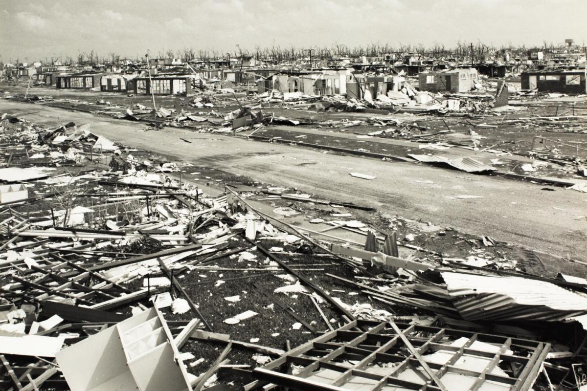

Select a Storm
Australian Cyclone Events
Six defining moments in Australian meteorological history. Each event reshaped how the nation understands, prepares for, and responds to tropical cyclones.

Darwin, Northern Territory
Cyclone Tracy
Christmas 1974. A Category 4 cyclone erased 90% of Darwin's homes in a single night, triggering Australia's largest peacetime evacuation.
Peak Winds
217 km/h
Fatalities
66
Damage
$800M

Innisfail, Far North Queensland
Cyclone Larry
March 2006. One of the most intense cyclones to strike Australia's mainland — with zero fatalities. A remarkable story of preparation and community resilience.
Peak Winds
240 km/h
Fatalities
0
Damage
$1.5B

Townsville, Queensland
Cyclone Althea
Christmas Eve 1971. A catastrophic storm that drove major reforms in Australian building codes and structural standards.
Peak Winds
196 km/h
Fatalities
3
Damage
3.3k Homes

Port Hedland, WA
Cyclone George
March 2007. The storm that hit Australia's iron heart, sending a two-week tremor through the global economy.
Peak Winds
295 km/h
Fatalities
3
Damage
$2.9B

Bathurst Bay, QLD
Cyclone Mahina
March 1899. The deadliest cyclone in Australian history. A 13-metre storm surge annihilated the local pearling fleet.
Record Surge
13 m
Fatalities
307+
Damage
100+ Vessels

Mission Beach, QLD
Cyclone Yasi
February 2011. A massive system that triggered Australia's largest peacetime evacuation and heavily impacted the Wet Tropics.
Peak Winds
285 km/h
Fatalities
1
Damage
$3.6B